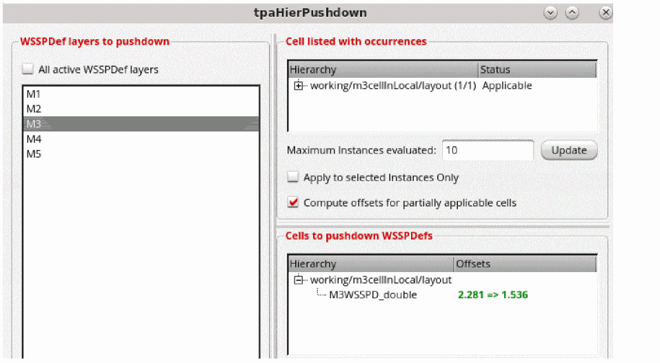

Pushing down WSSPDefs in Hierarchy
The Hierarchy Auto Pushdown Options icon is available in the Track Pattern assistant if you set the tpaShowHierPushdownBtn to t.
You can use the Hierarchy Auto Pushdown Options icon on the toolbar in the Track Pattern assistant to push WSSPDefs in hierarchy.
To push the WSSPDefs in heirarchy:
- Select an instance that has WSSPDefs in the layout.
-
Click the Hierarchy Pushdown Options icon on the toolbar in the Track Pattern assistant.
The tpaHierPushdown form opens.
 - Select the WSSPDefs layers to pushdown from the WSSPDefs layers to pushdown section.
- The Cell listed with occurrences, Cells to pushdown WSSPDefs, and Occurrences with offset conflicts sections are listed.
- Specify the maximum number of instances to be evaluated in the Maximum Instances evaluated option.
-
Select Apply to selected Instances Only or Compute offsets for partially applicable cells to select these options for the cell listed with occurrences.
This CCR introduces pushing down local region WSPs in the _tpaHierPushdownDialog
When you have instances that are inside local regions, they are considered for pushing down the WSP of the local region into the sub cell. If an instance crosses a WSP local region boundary, it is not considered for pushdown and is marked as Ignored.
When multiple instances are fully inside or outside local regions, if they have different WSPs or periods, they are marked as conflicts, and they can be selected for forced pushdown.
The local regions push the local region WSP into the sub cell, make it the active WSP, and align the offset.
Related Topics
Launching the Track Pattern Assistant
Track Pattern Assistant Toolbar
Return to top